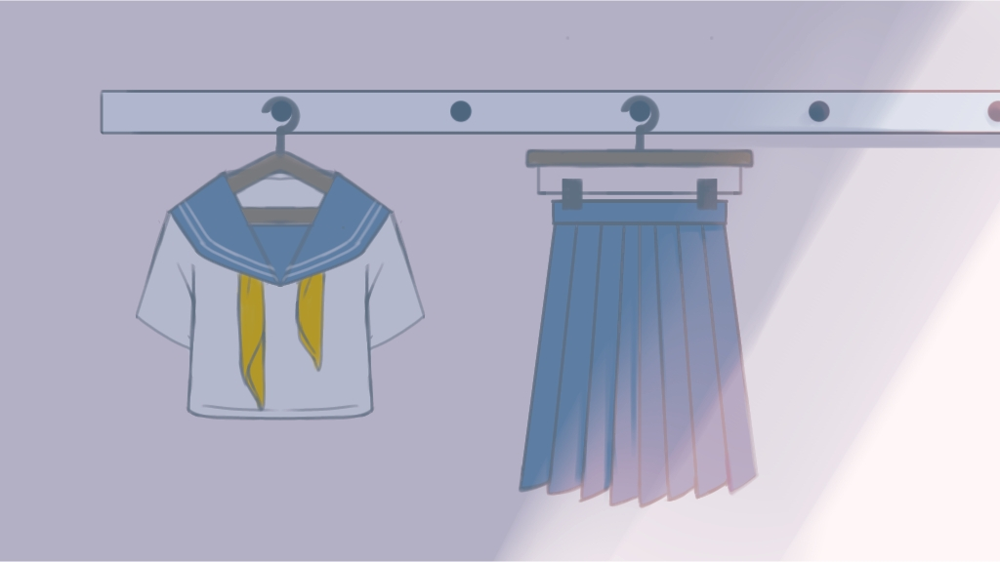
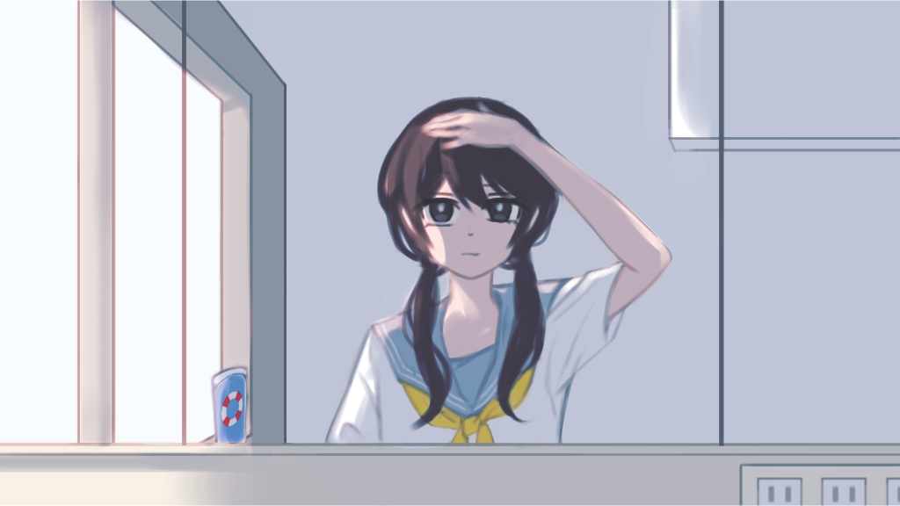
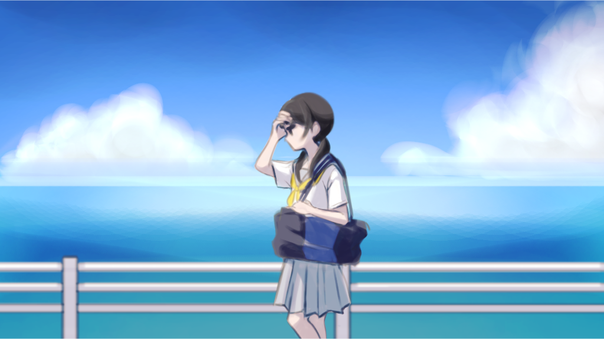
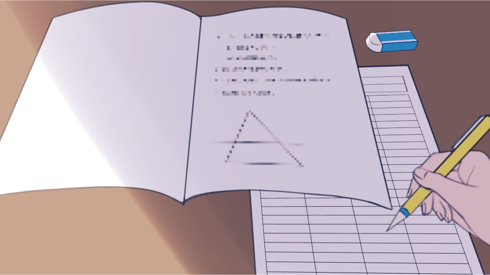
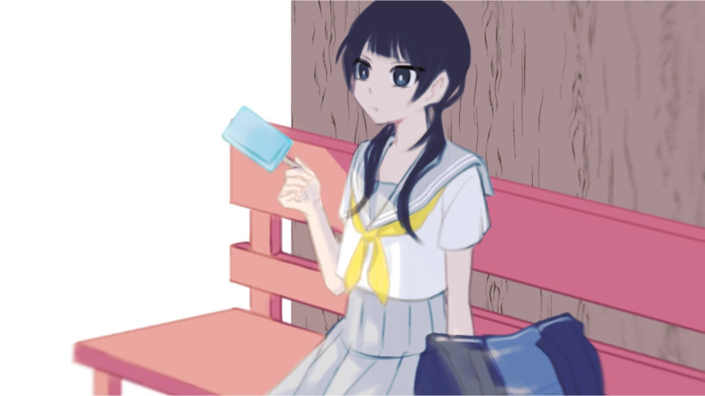
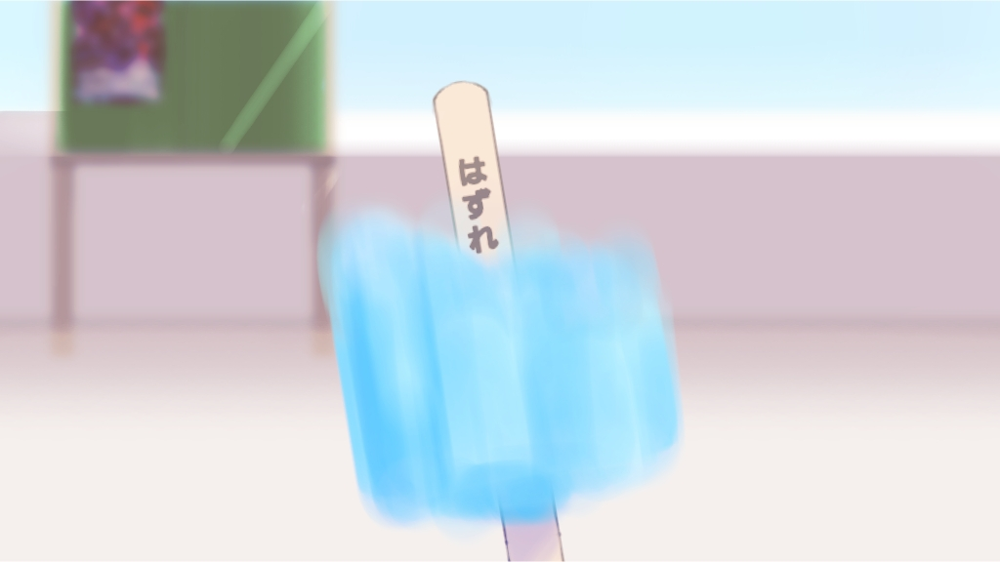
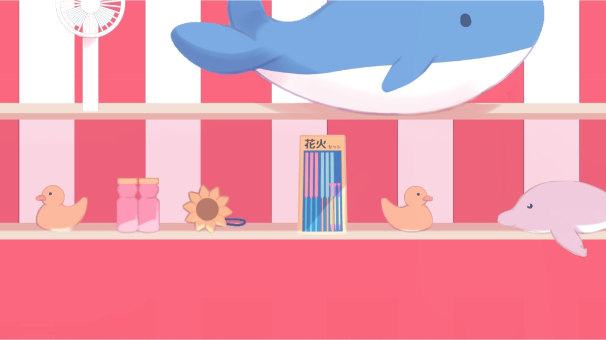
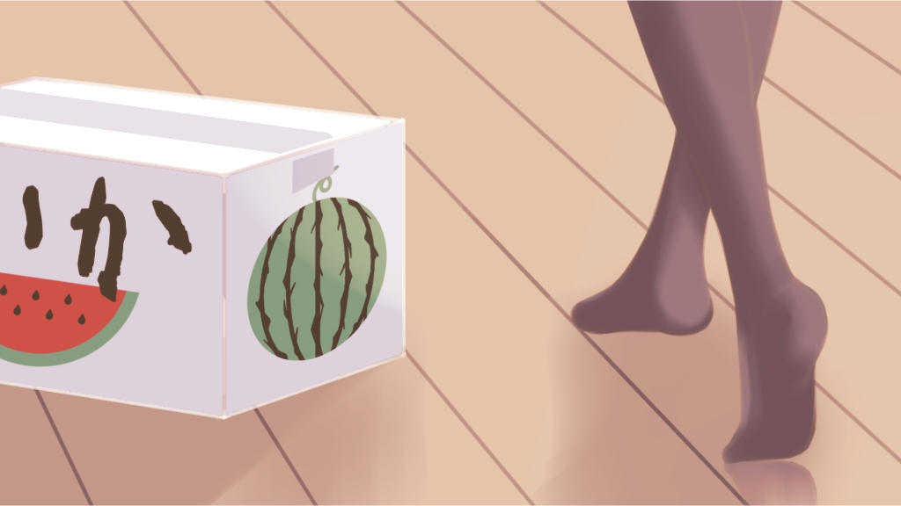
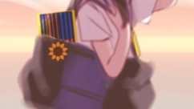

あ〜〜〜………
今日、土曜授業だ
アラームより先に起こされちゃったなぁ
準備しないと
・
・
・
毎日こうやって顔を洗って、歯を磨いて、
当たり前だけど、
偉いかも！
…喉乾いた
生き返る〜〜〜！！！！！！

そろそろ着替えないと

前髪って異常に伸びるの速いな…
時間あるし、切っちゃお
あ
・
・
・
最悪だ………

もし今日の模試で100点とったとしても、
今日の私は「前髪を切りすぎた人」に変わりない
…厄日？

全然分かんないし
もうやだ〜〜〜〜〜〜
あっ！
あの雲、アイスに似てる
…なんだかアイス食べたくなってきたな
昼で終わるし、帰り道に寄っちゃお！
・
・
・

…まあ、このくらいが

ちょうどいいよね
…あれ？
今日ってお祭りの日だ、もうそんな時期なのかぁ
行こうかな、模試も終わったことだし
息抜き 息抜き
・
・
・
ついた！

射的かぁ
あのクジラのぬいぐるみ、取れるかな
1回だけやってみよ
1回だけ…
・
・
・
結局クジラは取れなかったけど
楽しかったからまぁ、いっか！

ただいま〜
！ スイカだ！
ごはんのあとのお楽しみが出来ちゃった！
・
・
・
結局クジラは取れなかったけど

花火セット取れて良かったな
結局クジラは取れなかったけど！
あ！
・
・
・
今日は夏のフルコースだったなぁ
楽しかった！